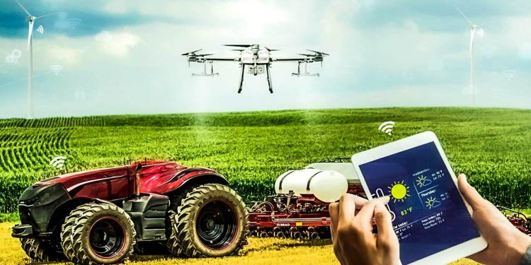

Why does the world desperately need to implement modern technologies for food production?
The agricultural sector faces constraints in land and farming inputs, while the demand for food is growing at an unprecedented rate. The world’s population is expected to touch the 9.7 billion mark by 2050, and the water supply will fall 40% short of meeting global water demands by 2030. Some other food and sustainability issues plaguing the world are – rising energy, labor, and nutrient costs, reducing profit margins, degradation of arable land, and increasing environmental pressures, such as climate change and the economic impact resulting from it.
To address these challenges, the agriculture sector must embrace modern technologies. Undoubtedly, more powerful and efficient machinery and genetic manipulation techniques have been available for a long time. Still, the changing world needs modern and more sophisticated tools, like Artificial intelligence, analytics, connected sensors, and other emerging technologies. Let us now take a deeper look at how modern technologies can deliver the next productivity leap and help farmers optimize yields, become sustainable, and improve profits.
Water, fertilizer, pesticides, and other inputs are no longer applied “by eye” or uniformly across the field by large agricultural producers. The use of advanced agriculture technologies allows for the precise application of only what is required in each location, as well as the careful tailoring of treatment for each plant

CROP MONITORING PRODUCT
Empowering agricultural businesses with remote farm monitoring
EOSDA Crop Monitoring is an advanced satellite-powered precision farming platform for food producers, insurance companies, input suppliers, and other agricultural players. Effortlessly access data on crop health, weather conditions, crop rotation, field activities, elevation, soil moisture, and more — all seamlessly embedded into a user-friendly interface.

LAND VIEWER PRODUCT
Empowering agricultural businesses with remote farm monitoring
EOSDA Crop Monitoring is an advanced satellite-powered precision farming platform for food producers, insurance companies, input suppliers, and other agricultural players. Effortlessly access data on crop health, weather conditions, crop rotation, field activities, elevation, soil moisture, and more — all seamlessly embedded into a user-friendly interface.
Benefits Of Technology In Agriculture
The implementation of smart agricultural technology is advantageous for all players in the agri-food chain. With its use in optimizing and automating agricultural operations and field activities, growers and landowners can now save significant amounts of time and effort. These are just a few examples of how farming has benefited from advances in agriculture technology:
using less water, fertilizer, pesticides, and other inputs allows agricultural producers to cut costs and keep more of their profits;
by preventing or drastically reducing the amount of chemical runoff into waterways, businesses lessen agriculture’s impact on the environment and take steps toward greater sustainability;
increasing crop yields while decreasing labor inputs;
making it easier for farmers, agronomists, or other agricultural workers to communicate and coordinate activities using mobile devices, apps, or web-based resources;
lowering barriers to accessing agricultural insurance and financial services as well as market and technological data;
mitigation of the damage that could be caused by pests, natural calamities, and bad weather in agriculture with the help of affordable, always-on agricultural monitoring systems;
increase in farm income through improved product quality and increased quality controls;
timely recognizing nutrient deficiency in plants and notifying agricultural producers of the type and amount of fertilizer and other amendments needed;
ability to foresee potential problems on the farm through the visualization of production patterns and trends gleaned from an analysis of current and historical agricultural data. By estimating their overall crop yield, agricultural producers can precisely budget for the next growing season and better prepare for emergencies.